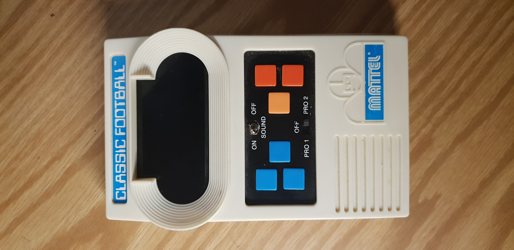

FOOTBALL GAME AUDIO PLAYER
An idea to convert my Mattel Classic Football game into an MP3 player while keeping its game functionality and retro aesthetic. Only a simple concept at the moment. I have a simple idea and nothing else. Will probably utilize an Arduino MP3 decoder module, tactile momentary switches, high-quality machined volume knob, and a rugged 3.5mm female audio jack.2018.10.20
remeber how I said I will still make the game playable? Well, I lied. There is just not enough space to fit in both the game and custom circuitry. However, I have made some design ideas for the device. Here's what I have so far: 